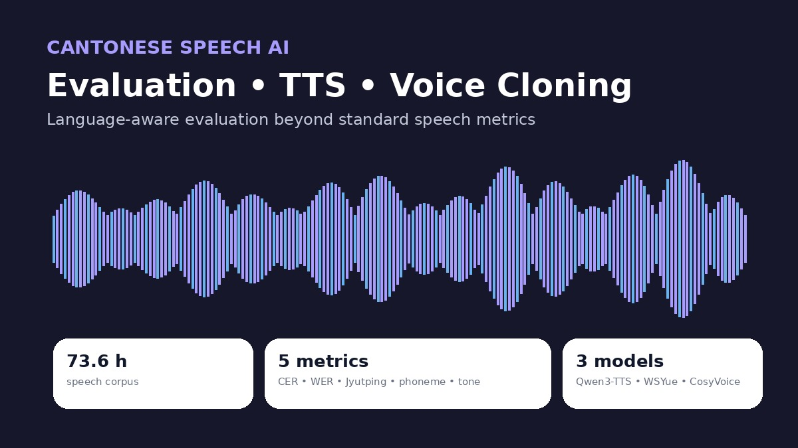
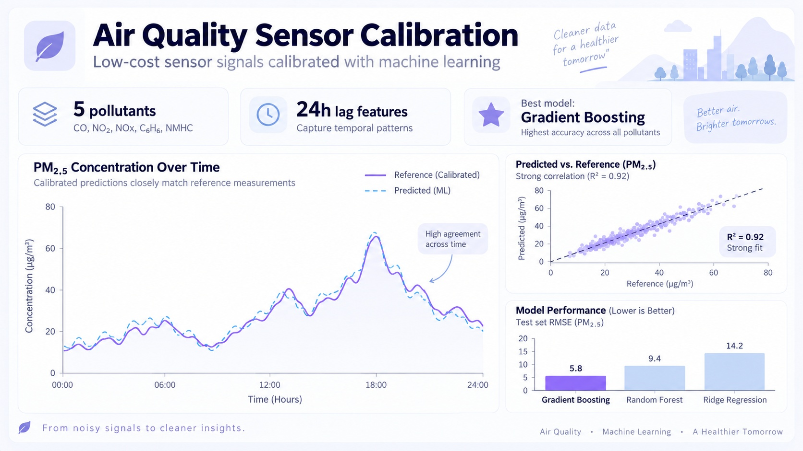
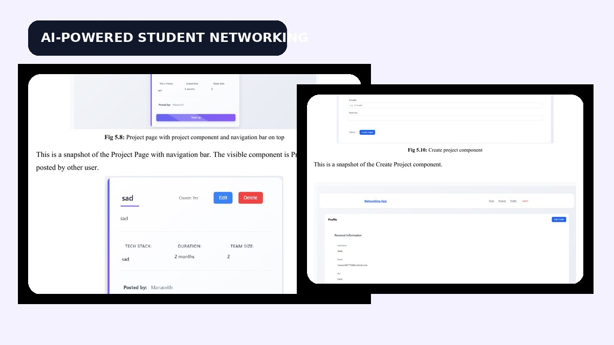
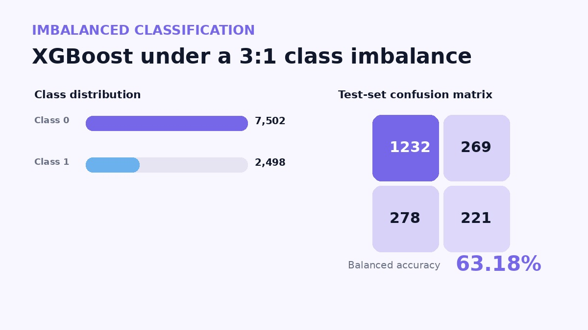
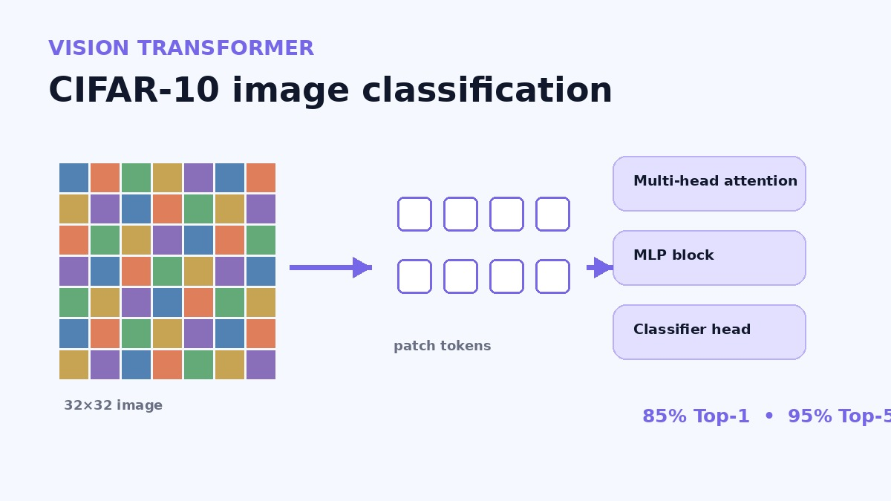
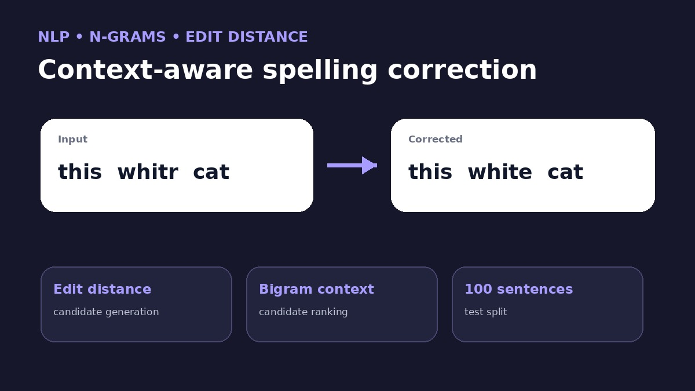
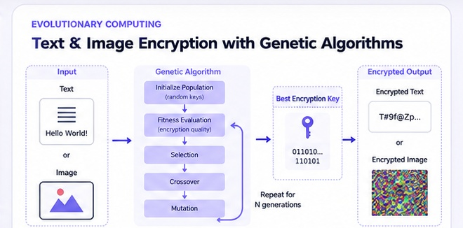

Measure what matters
I choose evaluation methods that match the failure mode — from BER for class imbalance to tone-aware metrics for Cantonese TTS.
Hi, I’m Meghana.
Data Science graduate student at Arizona State University working across machine learning, AI, MLOps, NLP, computer vision, and applied data systems.
How I work
I choose evaluation methods that match the failure mode — from BER for class imbalance to tone-aware metrics for Cantonese TTS.
I’m comfortable moving from preprocessing and feature engineering to model evaluation, APIs, interfaces, and reproducible workflows.
Whether collaborating with faculty or debugging AI environments, I refine the work until the result is clear, useful, and dependable.
01 — Featured work
Three projects that best show how I approach AI/ML, data, and software problems.
Built an evaluation and experimentation workflow for Cantonese text-to-speech, combining language-aware metrics with reproducible model inference and corpus preprocessing.
Standard speech metrics can miss Cantonese pronunciation and tone failures.
Combined character, word, Jyutping, phoneme, and tone error rates; benchmarked annotation tooling and voice-cloning models.
Validated a preprocessing/annotation pipeline for a 73.6-hour corpus and enabled reproducible generation experiments across multiple models.

Calibrated low-cost metal-oxide sensor signals against reference pollutant concentrations using nonlinear models, temporal features, and time-aware validation.
MOx sensors drift, respond to multiple gases, and are sensitive to temperature and humidity.
Engineered 1/6/12/24-hour lags, rolling means, meteorological interactions, and calendar features with rolling-origin validation.
Gradient Boosting consistently outperformed Random Forest and Ridge across the modeled pollutants.

Built a student-first networking platform for profiles, posts, project collaboration, and AI-assisted content creation.
Traditional professional networks often underserve students who need project-centric ways to build visibility and collaborate.
Implemented a client-server architecture with JWT authentication, Supabase/PostgreSQL storage, project team-up workflows, and an OpenAI-powered writing assistant.
Developed and tested 21 backend APIs supporting registration, profiles, posts, projects, and collaboration flows.

02 — More projects

Built an end-to-end classifier for a 3:1 imbalanced tabular dataset, using class weighting and balanced metrics instead of relying on raw accuracy.

Implemented a Vision Transformer pipeline with augmentation, image patching, transformer encoder blocks, self-attention, and hyperparameter tuning.

Built a context-aware spelling corrector using unigram/bigram language statistics and edit-distance candidate generation on the Holbrook corpus.

Explored evolutionary optimization for symmetric encryption keys, combining a genetic algorithm with XOR-based reversible encryption for text and image data.
03 — Experience
AI engineering, data work, curriculum design, research support, and cross-functional leadership.
Center for the Study of Race and Democracy · Arizona State University
Department of Physics · Arizona State University
Vosyn
Solix Technologies
AIESEC · Hyderabad & Nepal
04 — Skills
05 — Education
Graduating May 2027
Arizona State University
GPA 3.67 / 4.002021 – 2025
University College of Engineering, Osmania University
GPA 8.4 / 10.0Certifications
Machine Learning with Python
Databases & SQL for Data Science with Python
Programming with JavaScript
AI Engineer
06 — Contact
I’m graduating in May 2027 and currently exploring opportunities where I can contribute across data science, machine learning, AI engineering, or MLOps.